피벗 테이블: 한 행 = 거래 하나인 원자료를, 수식 없이 "행 × 열" 요약표(합계·개수·평균·비율)로 바꾸는 도구 → 데이터가 늘어도 새로 고침만 하면 됨
답하는 질문 예: 매출 80%를 내는 제품은? 매장별 매출은? 계절성이 있나? 프로모션이 판매를 늘리나? 광고를 누구에게?
파레토 80-20: 매출의 대부분(80%)이 소수 제품(20%)에서 나옴 → 재고·진열을 그런 제품에 집중
계절성: 특정 달·계절에 판매가 몰리는 패턴 (월별 비율을 1/12 = 8.3%와 비교)
교란(confounding): 두 원인이 같이 움직여서 효과를 따로 못 봄 (프로모션이 주말에 몰리면 판매 증가가 요일 때문인지 프로모션 때문인지 모름) → 피벗(기술통계)으로는 한계, 회귀로 분리
합계 vs 평균: 그룹마다 날 수(표본 수)가 다르면 합계 비교는 왜곡 → 평균으로
PARETO (철물점)
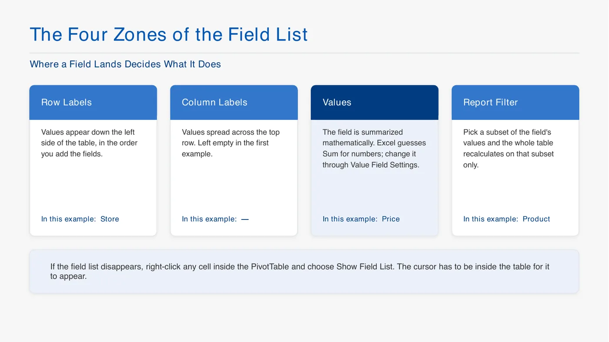
2강 p5 필드 목록 네 영역
슬라이드: 피벗 필드 목록의 네 칸. 행 레이블 = 값이 왼쪽에 세로로 나열 (예: Store) / 열 레이블 = 위쪽에 가로로 펼침 (첫 예제는 비움) / 값 = 계산되는 칸, 숫자는 기본 합계, 값 필드 설정에서 변경 (예: Price) / 보고서 필터 = 일부 값만 골라 표 전체를 다시 계산 (예: Product). 필드 목록이 사라지면 피벗 안 아무 셀 우클릭 → 필드 목록 표시.
교수님: 데이터를 열면 먼저 "이 표가 무슨 정보를 담고 있나"부터 말로 정리
한 행 = 거래 한 건, 같은 제품·달·매장이 두 줄이면 두 번 팔린 것 → Price를 더하면 매출
매장별 52% vs 48%
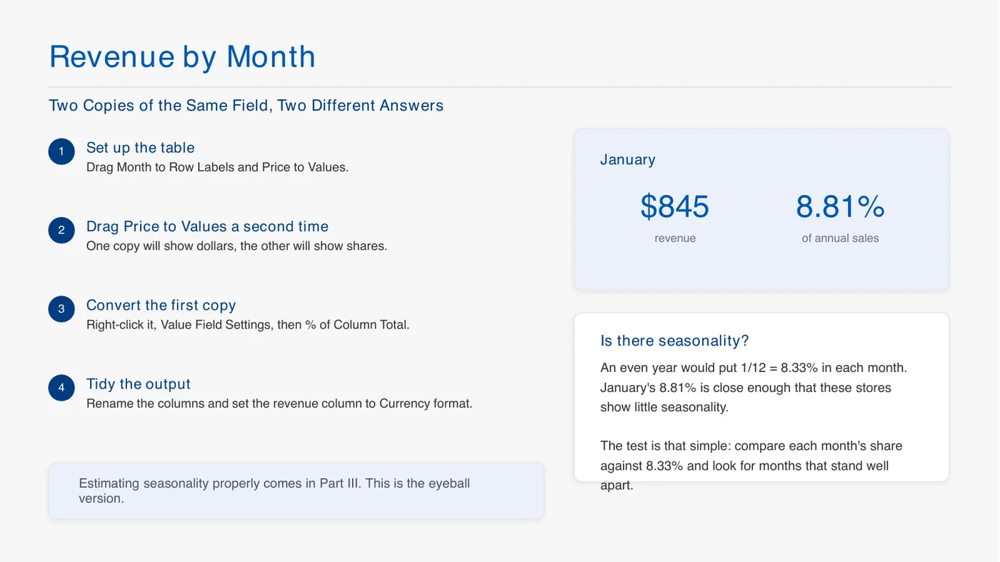
2강 p7 월별 매출
슬라이드: 월별 매출 만드는 순서. Month를 행, Price를 값에 두 번 → 하나는 금액, 하나는 값 필드 설정 → 열 합계 비율 → 열 이름 정리. 예: 1월 $845 = 연 매출의 8.81%. 계절성 판단: 매출이 고르면 달마다 1/12 = 8.33%, 여기서 크게 벗어나는 달이 없으니 계절성 거의 없음.
월별은 1/12 ≈ 8.3%와 비교 → 계절성 거의 없음
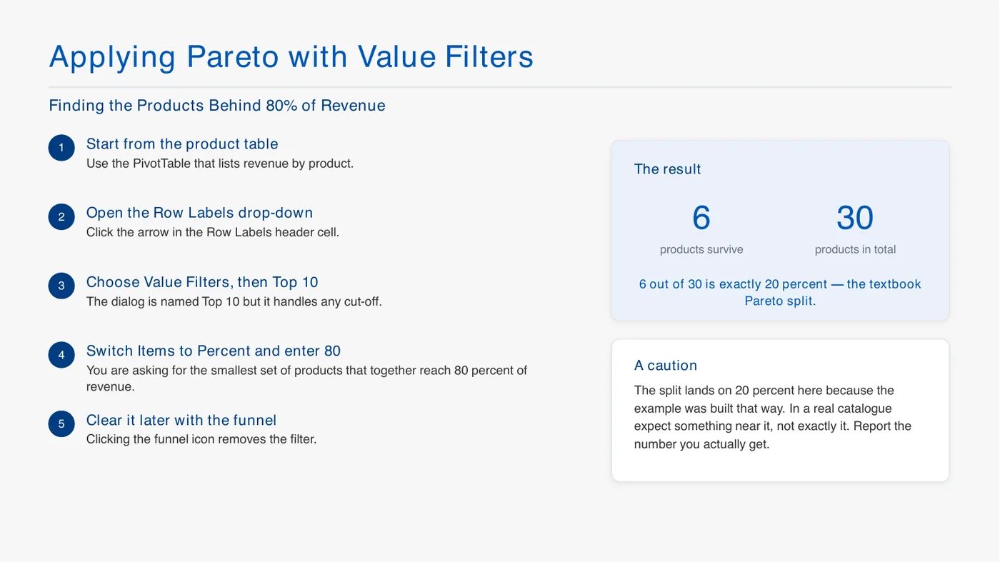
2강 p10 파레토 값 필터
슬라이드: 매출 80%를 내는 제품 찾기. 제품별 매출 피벗 → 행 레이블 드롭다운 → 값 필터 → 상위 10 (이름만 10, 아무 기준 가능) → 항목을 백분율, 숫자 80 → 30개 중 6개(20%)만 남음 = 파레토 80-20. 실제 데이터에선 딱 20%가 안 나올 수 있으니 나온 숫자를 그대로 보고. 필터 해제는 깔때기 아이콘.
제품별 매출 차이를 왜 보나? (교수님 질문) → 학생 답: 품절 방지, 안 팔리는 제품 정리 → 재고 관리
이커머스는 재고 비용이 운영비의 25~30% (쿠팡 신선식품은 냉장 때문에 더 큼)
상위 80% 필터 → 30개 중 6개 = 20% → 파레토 80-20
학생 질문: 매출은 가격×수량이 섞였는데 괜찮나? → 이 데이터는 가격이 안 변해서 OK, 가격이 바뀌면 따로 봐야 함
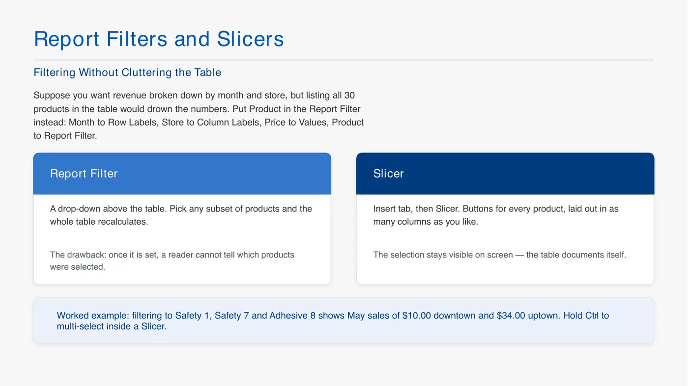
2강 p11 필터와 슬라이서
슬라이드: 월(행) × 매장(열) × Price(값) 표에서 Product는 표 밖으로 빼서 고름. 보고서 필터 = 표 위 드롭다운, 단점은 뭘 골랐는지 나중에 안 보임. 슬라이서 = 삽입 → 슬라이서, 제품마다 버튼이 남아 선택이 보임, Ctrl로 여러 개. 예: Safety 1, Safety 7, Adhesive 8만 고르면 5월 다운타운 $10, 업타운 $34.
월×매장 표에서 30개 제품을 다 행에 넣으면 복잡 → Product를 필터나 슬라이서로 빼서 고른 제품만 봄
Bakery (요일, 계절, 프로모션)
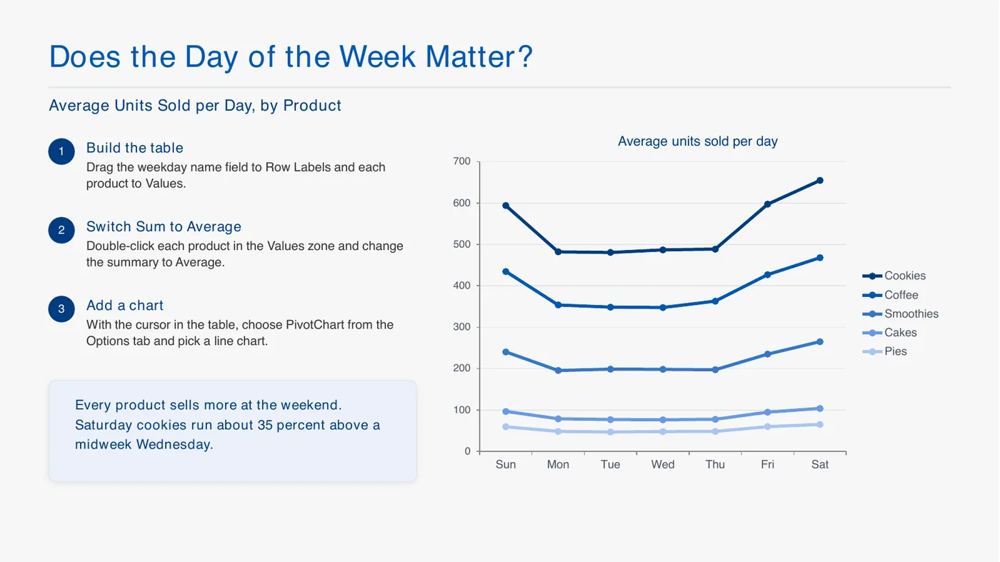
2강 p14 요일별 평균
슬라이드: 요일별 하루 평균 판매량. 요일을 행, 제품 다섯 개를 값 → 각각 합계를 평균으로 → 피벗 차트(꺾은선). 그래프: 다섯 제품 모두 주말에 올라감, 토요일 쿠키가 수요일보다 약 35% 많음.
요일별은 합계 말고 평균 (요일마다 날 수가 다름) → 주말에 다 많이 팔림
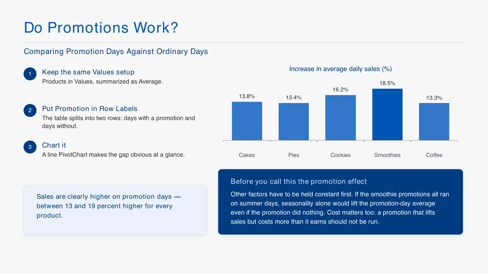
2강 p17 프로모션
슬라이드: 프로모션 효과. 같은 평균 설정에서 promotion을 행 → 프로모션 날 / 아닌 날 두 줄. 막대 = 하루 평균 증가율: 케이크 13.8%, 파이 13.4%, 쿠키 16.2%, 스무디 18.5%, 커피 13.3% (모두 13~19%). 주의: 다른 요인을 먼저 고정해야 함 (스무디 프로모션이 여름에 몰렸다면 계절성 때문일 수 있음 = 교란), 늘어난 매출보다 비용이 크면 하면 안 됨.
프로모션 날 판매가 더 높음, 슬라이서로 평일/주말 나누면 쿠키는 평일, 스무디·커피는 주말에 효과 큼, 케이크는 차이 없음 (학생: 케이크는 특별한 날에 사니까 → 교수님 동의)
교란: 요일 효과와 프로모션 효과가 섞여 있음 → 기술통계로는 분리 못 함, 회귀가 하는 일
묶음 토론: 쿠키·커피가 잘 팔리니 묶자 → 교수님: 이미 잘 팔리는 둘을 묶으면 할인만 손해, 게다가 이 데이터는 한 손님이 뭘 같이 샀는지 모름
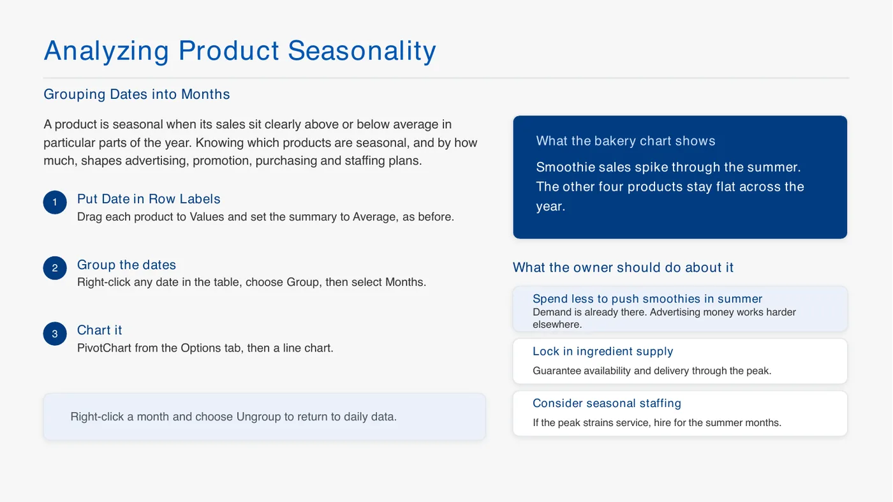
2강 p15 계절성
슬라이드: 계절성 = 특정 시기에 판매가 평균보다 확실히 높거나 낮은 것. 날짜를 행 → 우클릭 → 그룹 → 월, 값은 평균, 꺾은선 차트. 그래프: 스무디만 여름에 솟고 나머지 넷은 1년 내내 평평. 사장이 할 일: 여름엔 이미 수요가 있으니 스무디 광고비는 줄이고, 재료 공급 확보, 여름 인력 충원. 그룹 해제하면 일별로 돌아감.
날짜를 월로 그룹 → 스무디만 여름에 급증
스무디 여름 대응 (토론): 재료·인력 확보, 이미 수요 있으니 광고비는 다른 데, 가격 인상 고려
가격 올릴 때 볼 것: 대체재(쿠키↔파이·케이크), 경쟁 가게, 손님이 가격에 얼마나 민감한지 → 4강 탄력성
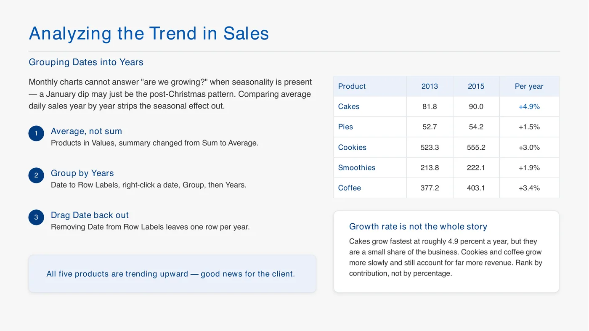
2강 p16 연도별 추세
슬라이드: 성장 추세 보기. 월별은 계절성이 섞여서 "크고 있나"를 못 봄 → 날짜를 연으로 그룹, 하루 평균 비교. 표: 2013년 → 2015년 케이크 81.8 → 90.0 (연 +4.9%), 파이 +1.5%, 쿠키 523.3 → 555.2 (+3.0%), 스무디 +1.9%, 커피 +3.4%. 주의: 케이크가 제일 빨리 크지만 비중이 작고 쿠키·커피가 매출은 훨씬 큼 → 성장률보다 기여도로 판단.
날짜를 연으로 그룹하면 다섯 제품 다 해마다 늘어남
ESPN 구독자
목적: 예산이 한정돼 있으니 누구에게 어디서 광고할지 (효율)
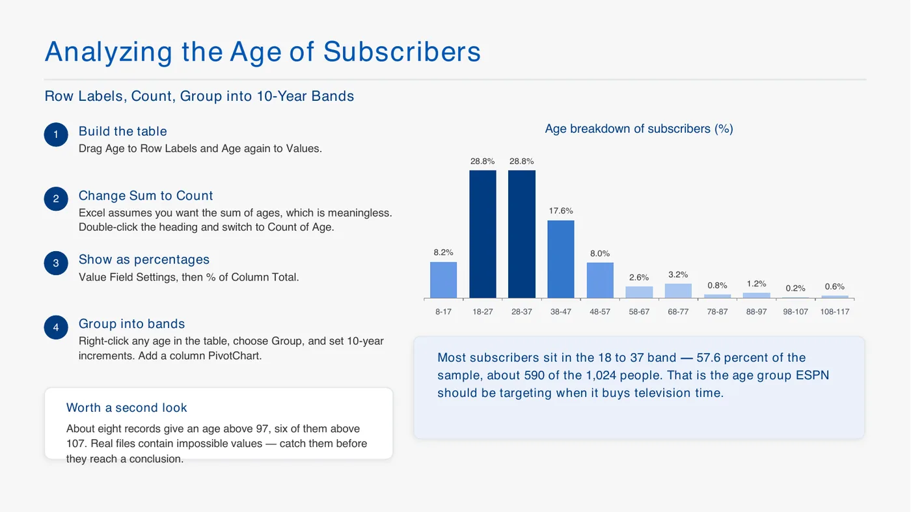
2강 p19 나이 분포
슬라이드: ESPN 구독자 나이. Age를 행과 값에 → 합계를 개수로 → 열 합계 비율 → 10살 간격 그룹 → 세로 막대 차트. 18~27세, 28~37세가 각 28.8% → 18~37세가 57.6% (1,024명 중 약 590명) = ESPN이 광고를 살 대상. 97세 넘는 기록 약 8개는 불가능한 값이라 결론 전에 걸러야 함.
나이: 그냥 넣으면 합계라 의미 없음 → 개수로, 그룹 → 18~47세에 대부분
100살 넘는 구독자 → 나이 확인을 안 하니 아무 숫자나 넣은 것 → 이상값
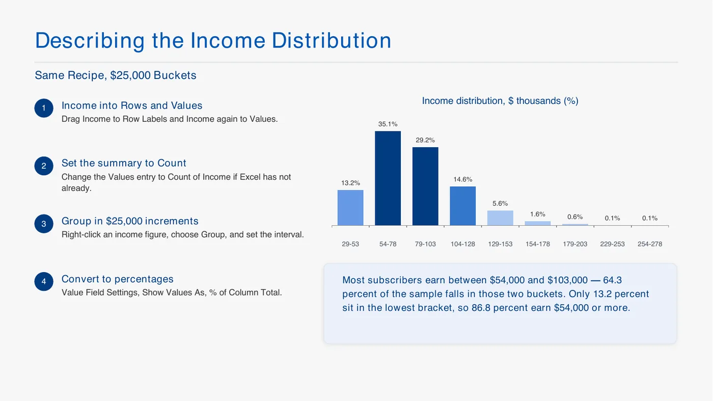
2강 p20 소득 분포
슬라이드: 소득 분포, 나이와 같은 방법 (행·값에 Income, 개수, $25,000 간격 그룹, 열 합계 비율). 54~78이 35.1%, 79~103이 29.2% → $54,000~103,000이 64.3%. 가장 낮은 구간(29~53)은 13.2%뿐이라 86.8%가 $54,000 이상.
소득 $25,000 단위 그룹 → $54,000~103,000이 약 64%
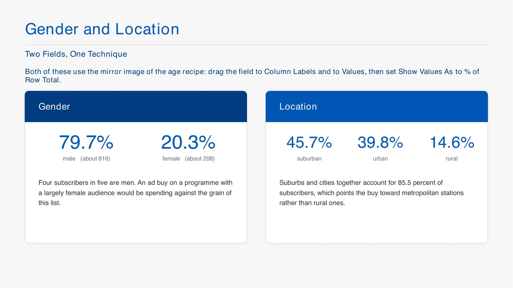
2강 p21 성별과 거주지
슬라이드: 성별과 거주지. 나이와 반대로 필드를 열과 값에 넣고 행 합계 비율. 남성 79.7% (약 816명), 여성 20.3% → 여성 시청자가 많은 프로그램엔 광고가 안 맞음. 교외 45.7%, 도시 39.8%, 시골 14.6% → 도시권 85.5%라 대도시 방송국에 광고.
성별: 열에 넣고 행 합계 비율 → 남성 약 80%
거주지 교외+도시 대부분 / 나이×소득을 같이 보면 젊은 층 소득 분포가 더 넓음
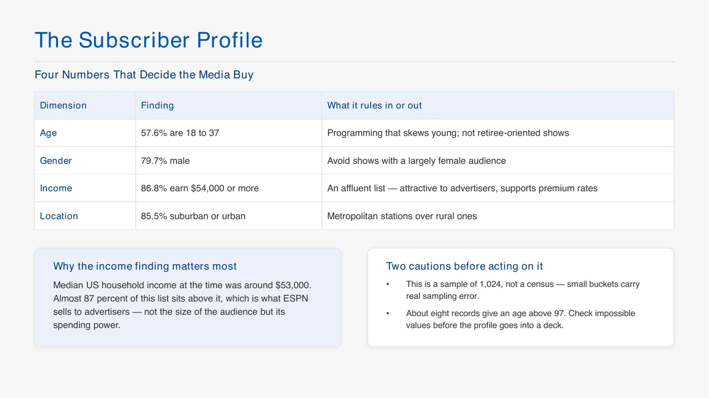
2강 p23 구독자 프로필
슬라이드: 구독자 프로필 요약표 (광고 구매를 정하는 숫자 네 개). 나이 18~37세 57.6% → 젊은 층 프로그램 / 남성 79.7% → 여성 위주 방송 피함 / 소득 $54,000 이상 86.8% → 당시 미국 중위 가구소득(약 $53,000)보다 높아 광고 단가를 높게 받을 근거, 제일 중요 / 교외·도시 85.5% → 대도시 방송국. 주의: 1,024명 표본이라 작은 구간은 오차가 크고, 불가능한 나이는 먼저 확인.